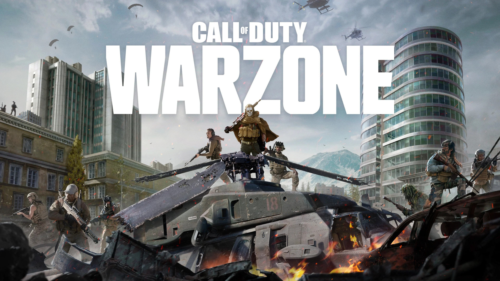

Fornite

Fortnite is a 2017 online video game and game platform developed and released by Epic Games. It is available in seven distinct game mode versions that otherwise share the same general gameplay and game engine: Fortnite Battle Royale, a battle royale game in which up to 100 players fight to be the last person standing; Fortnite: Save the World,a cooperative hybrid tower defense-shooter and survival game in which up to four players fight off zombie-like creatures and defend objects with traps and fortifications they can build;Fortnite Creative, in which players are given complete freedom to create worlds and battle arenas;Lego Fortnite, an open world game collection divided between survival game Lego Fortnite Odyssey and social game Lego Fortnite Brick Life; Rocket Racing, a racing game; Fortnite Festival,a rhythm game; and Fortnite Ballistic, a tactical first-person shooter currently in early access. All game modes except Save the World are free-to-play.
Grand Thef Auto V

Grand Theft Auto V is a 2013 action-adventure game developed by Rockstar North and published by Rockstar Games. It is the seventh main entry in the Grand Theft Auto series, following 2008's Grand Theft Auto IV, and the fifteenth instalment overall. Set within the fictional state of San Andreas, based on Southern California, the single-player story follows three protagonists—retired bank robber Michael De Santa (Ned Luke), street gangster Franklin Clinton (Shawn Fonteno), and drug dealer and gunrunner Trevor Philips (Steven Ogg)—and their attempts to commit heists while under pressure from a corrupt government agency and powerful criminals. Players freely roam San Andreas's open world countryside and fictional city of Los Santos, based on Los Angeles.
Call of Duty / Warzone

Call of Duty: Warzone[a] was a 2020 free-to-play battle royale first-person shooter game developed by Raven Software and Infinity Ward and published by Activision. It was released on March 10, 2020, for PlayStation 4, Windows, and Xbox One as part of Call of Duty: Modern Warfare (2019) and was subsequently connected to Call of Duty: Black Ops Cold War (2020) and Call of Duty: Vanguard (2021), but did not require purchase of any of the aforementioned titles.[2] Warzone allowed online multiplayer combat among 150 players and featured both cross-platform play and cross-platform progression between the three aforementioned titles.
At launch, the game featured two main game modes: Battle Royale and Plunder. Warzone introduced a new in-game currency system that could be used at "Buy Stations" in and around the map. "Loadout Drops" were a key in-game object allowing players to access and switch between their customized classes, which are pre-selected weapon and perk combinations, and were obtainable through purchase with the Cash currency.[3] At launch, Warzone only offered Trios, a squad capacity of three players; Solos, Duos and Quads were added to the game via post-launch updates.